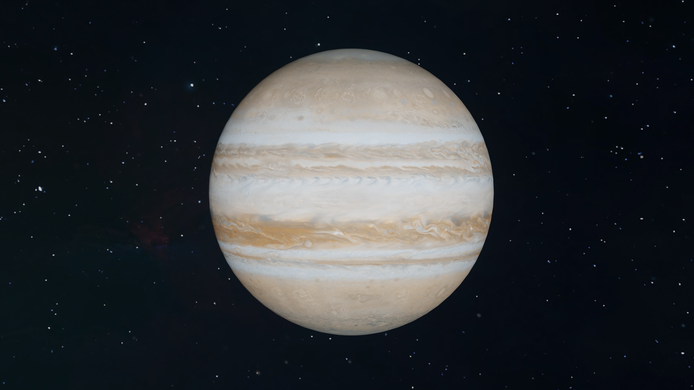

Click here to view more facts, about Jupiter
- Jupiter has been known, since ancient times.
- Since Jupiter is one of the brightest planets, it is visible, without a telescope.
- Jupiter is the largest planet, in the solar system.
- Jupiter is the fifth planet, from our sun.
- Jupiter was named after the king, of ancient Roman gods.
- The length of one day, on Jupiter, is 9.93 hours.
- One year, on Jupiter, is 11.86 Earth years.
- Jupiter has 80 moons.
- The surface temperature, of Jupiter, is -160 degrees Fahrenheit (-110 degrees Celsius).
- The diameter, of Jupiter, is 88,846 miles (142,984 kilometers).